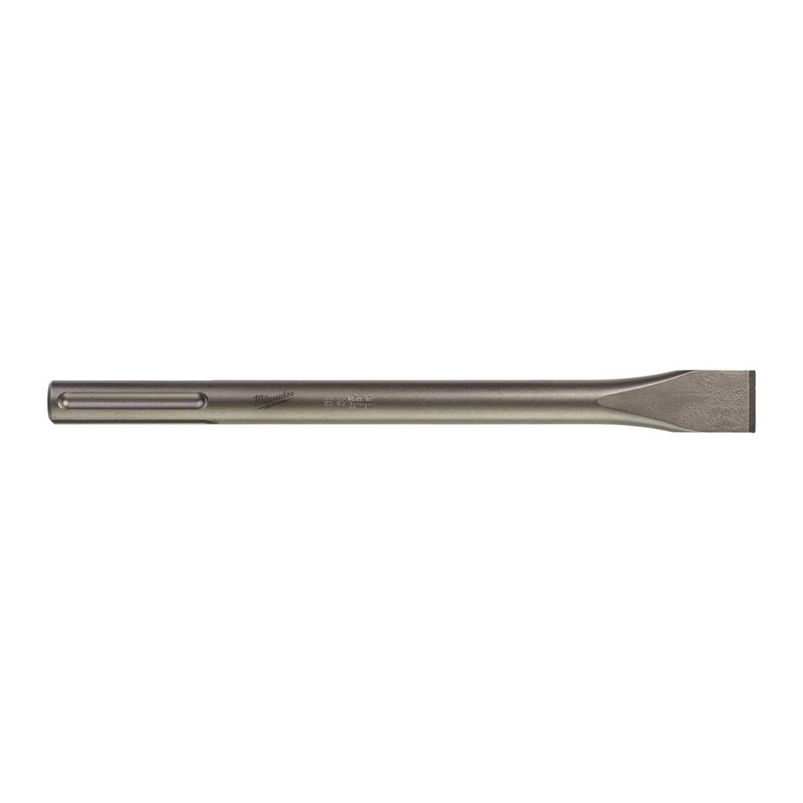
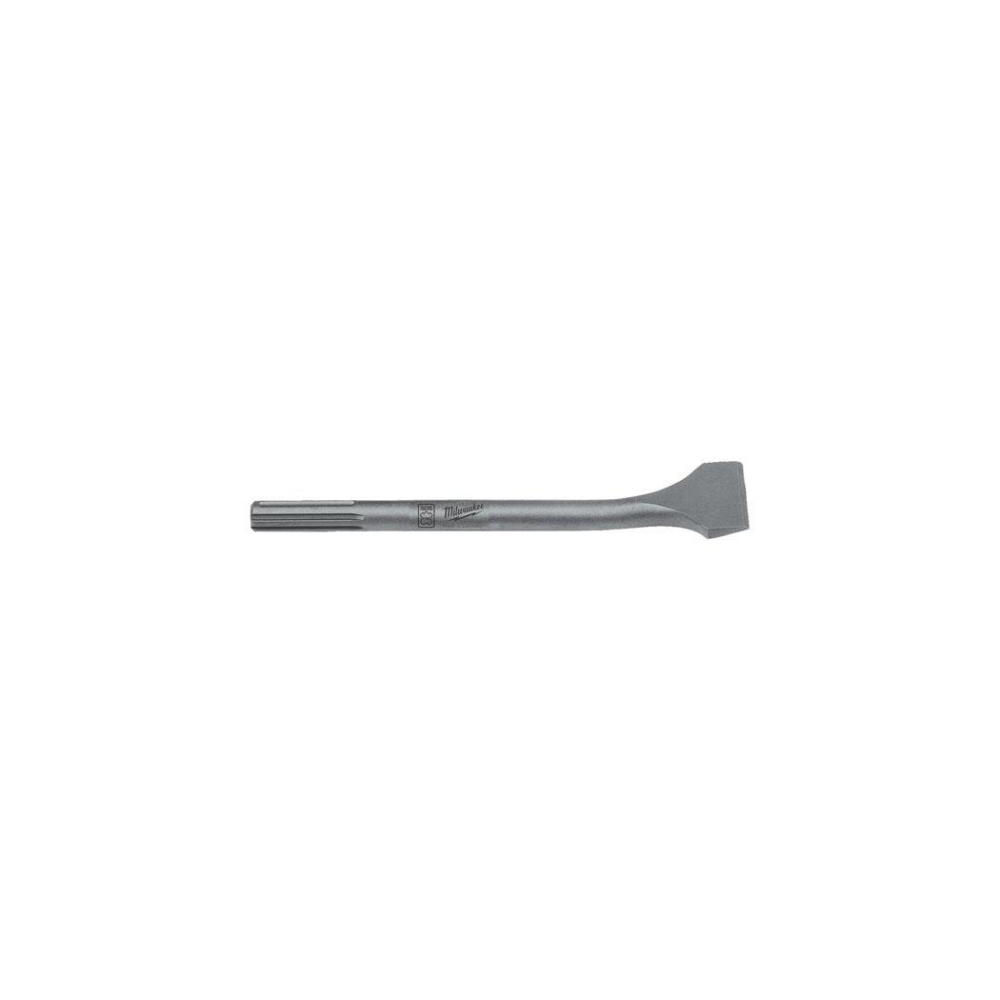
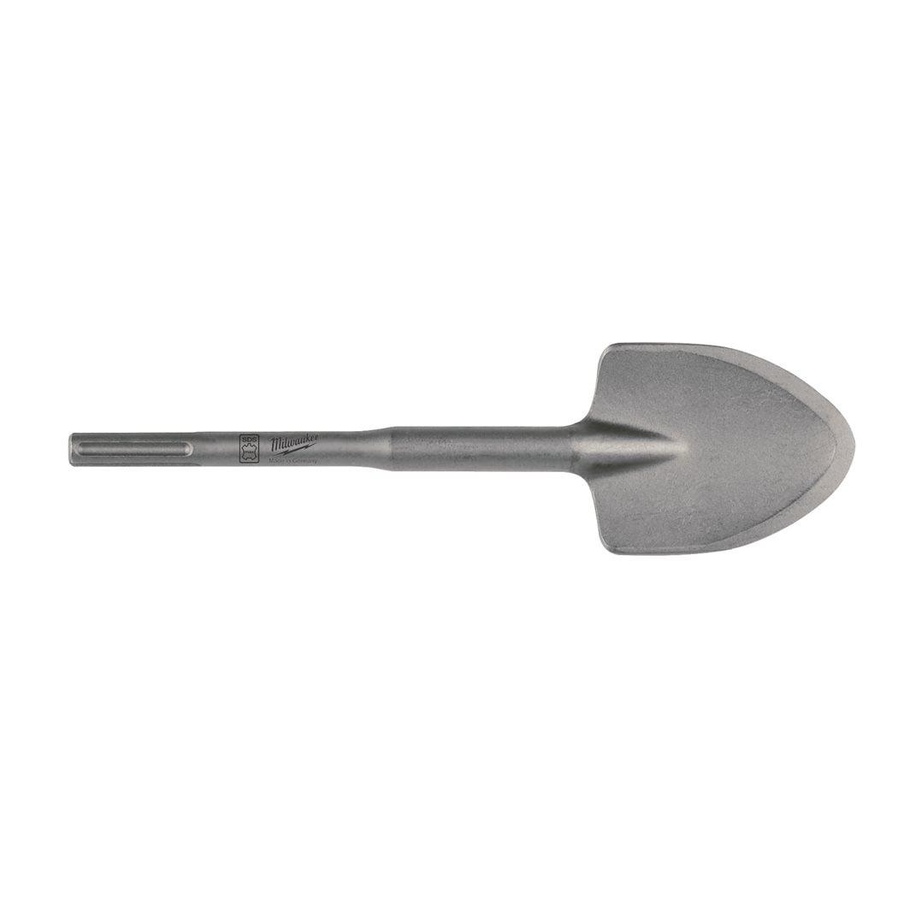
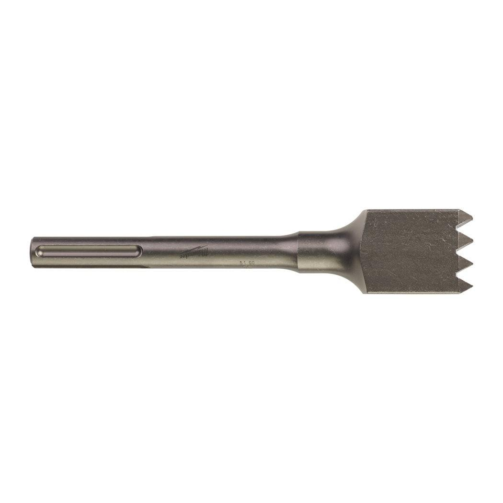
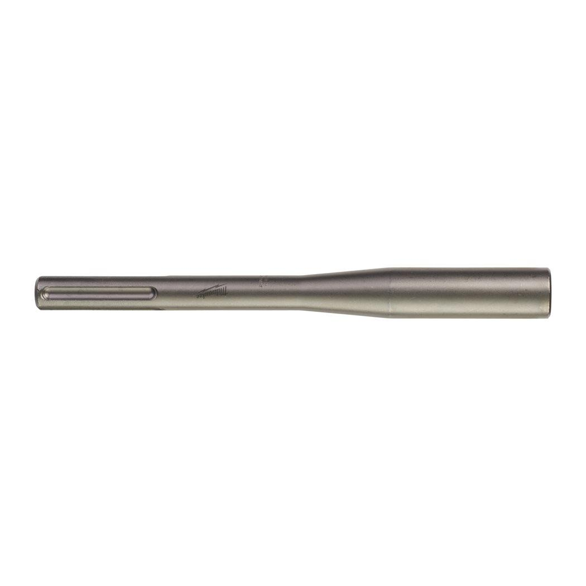
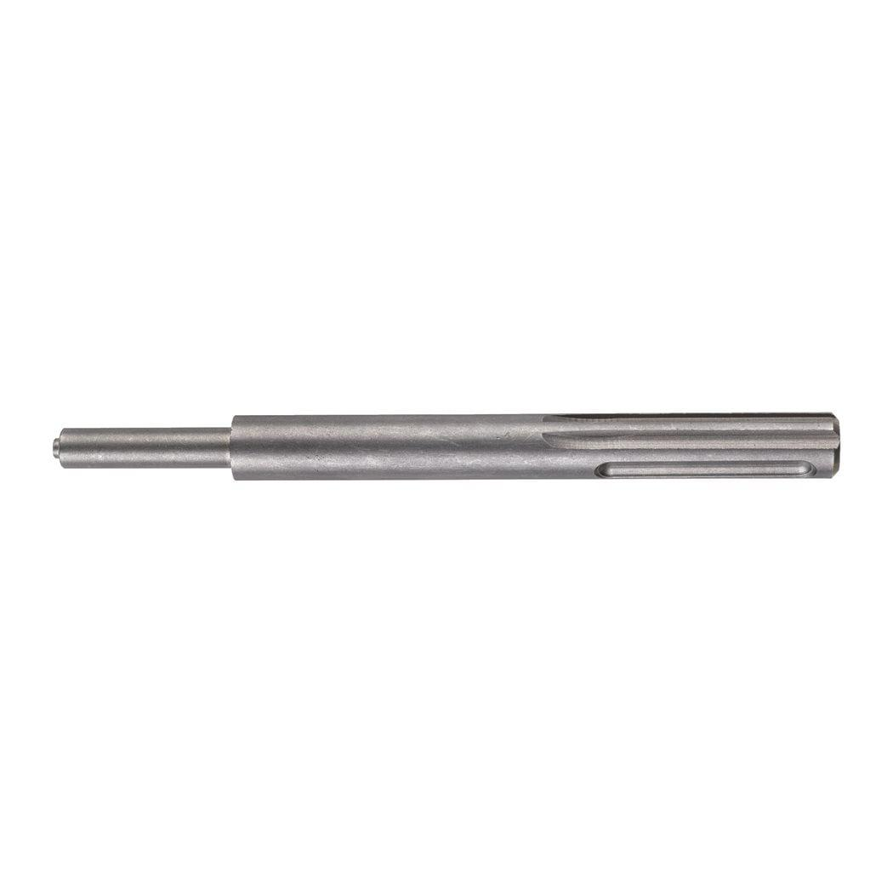
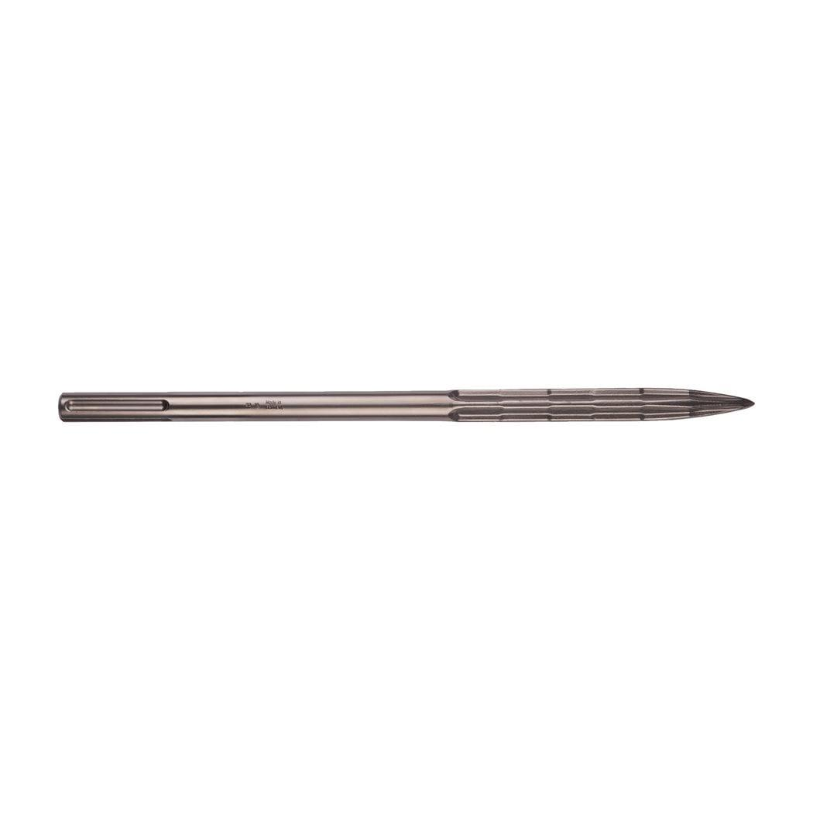

| Blade width (mm) | 80 |
| Pack quantity | 1 |
| Quantity | 1 |
| Total length (mm) | 300 |
| Width (mm) | 80 |
| Working length (mm) | 80 |
| Article Number | 4932343744 |
| EAN | 4002395317608 |